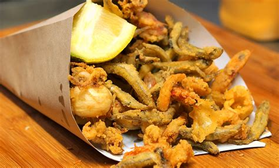
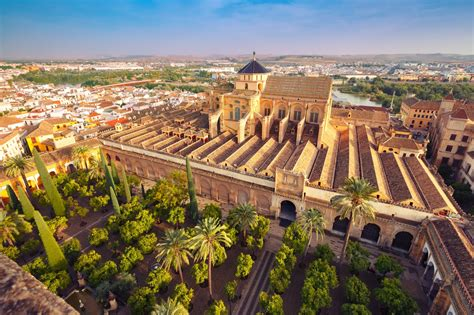
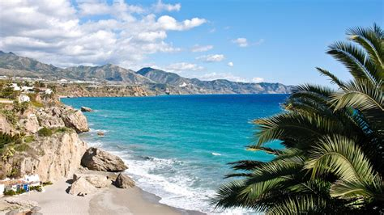
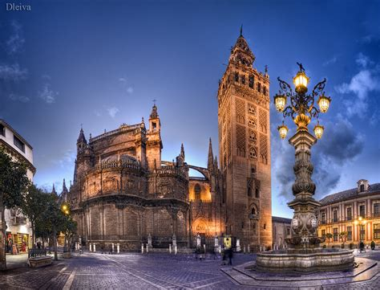

Andalucía
Descripción
Andalucía está en el sur de España. Tiene playas bonitas, ciudades con historia y montañas. Es famosa por la música flamenca, la comida rica y los edificios antiguos como la Alhambra.
Datos Rápidos
- Capital: Sevilla
- Idioma Regional: Español
- Población: ~8.4 millones
- Famosa por: Flamenco, playas, historia
- Dato Curioso:¡Andalucía es la cuna del flamenco!
Platos Populares
Gazpacho
Tortilla de Camarones

Jamón Ibérico

Pescaito Frito

Lugares Famosos
La Alhambra
Mezquita de Córdoba

Playa de la Costa del Sol

Parque Nacional de Doñana

La Giralda

Mejor época para visitar
La mejor época para visitar Andalucía es en primavera (marzo a mayo) y otoño (septiembre a noviembre), cuando el clima es agradable y no hace demasiado calor.
Símbolos Regionales
- Bandera:
- Escudo: